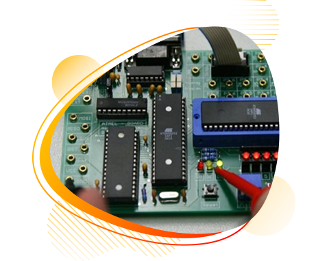

Qualification :
SSLC - Am completed my school in V H N K U S K V High School at Vadhuvarpatty.
Passed Out : 2009 - With 82%
DECE - Am completed my Diploma in Sri Sowdambika Polytechnic College at Aruppukottai.
Passed Out : 2012 - With 84%
B.E(ECE) - Am completed my Bachlor Degree in Sree Sowdambika College Of Engineering at Aruppukottai.
Passed Out : 2016 - With 68%
Workshop :
I have completed in EMBEDDED C WORKSHOP
hands on INTEL GALILEO GEN 2 board
organized by Respro lab Acadamic on August 6th to 9th,2015
I have successfully completed a workshop
covering in EMBEDDED SYSTEM hands on
Prolific system & technologies pvt. ltd.
COURSES :
MERN FULLSTACK DEVELOPER(04/2023 - 11/2023) fullstack develop course by GUVI, IITM.
